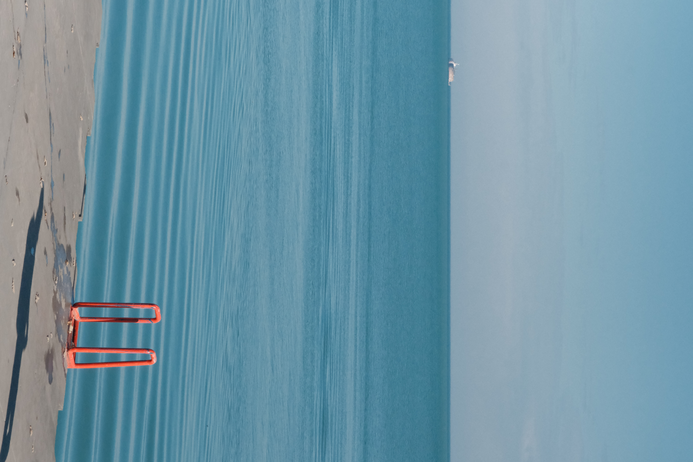

Minimal
Chicago
A sparse frame built on water texture, a distant vessel, and one sharp accent from the ladder in the foreground.

Minimal
A sparse frame built on water texture, a distant vessel, and one sharp accent from the ladder in the foreground.
